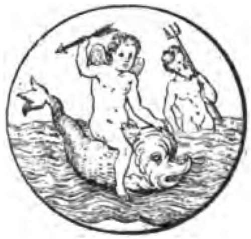
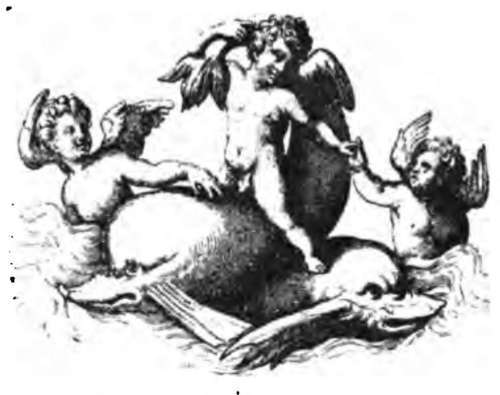

Mackerel Fishing. Part 5
Description
This section is from the book "Fishing", by Horace G. Hutchinson. Also available from Amazon: Fishing.
Mackerel Fishing. Part 5
A little tide is essential for drift-line fishing, the principle of which is to anchor the boat in the tideway, and let the line and hook, without any lead to weigh it down, drift away on the tide. The light line and gut tackle above described for whiffing from a rowing-boat will do admirably, though the lead may with advantage be removed. As these drift-line mackerel are larger fish as a rule than those caught on the moving lines, a more substantial bait is usually offered to them, a 3-inch strip of pilchard, mackerel, or fresh herring with the flesh attached, or a couple of medium-sized mussels, will be found to answer the purpose. This drift-line fishing is very sporting work with a trout-rod, but I have also enjoyed it at times even more with a very light hand-line. Striking at exactly the right moment with a light drift-line held in the hand is a fine art that can only be acquired by long practice, and the only method of hand-lining that I know to be even more artistic is that employed by Australians in fishing for black bream. So delicately do the larger bream bite, so quick must be the angler's response, that colonial fishermen are said to wear away the skin on the inside of the thumb and forefinger in order to render it more sensitive. We do not proceed to quite such extremities in fishing for mackerel, but certainly the striking, though not rough, must be quick and direct; and I have known ladies, who are naturally more delicate-handed as a rule than men, catch far more fish in this way than he who took them out and taught them how. As it is necessary to strike so promptly, the drift-line must, if there is to be any certainty of success, be held in the hand, and it is not therefore advisable that each person should fish with more than one. If, however, it is desired to use others not held in the hand, the only way is to hitch these on to a small cork bung, which lies in the bottom of the boat, to which, with a lot of slack line, it is also made fast. When a mackerel runs away with the bait, the cork bung is dragged overboard, not only drawing the angler's attention to the runaway line, but also, when it strikes the water, causing a momentary check that generally ensures the fish hooking itself effectually. It is always important that the point of the hook should be kept very sharp, but if there is any kind of fishing in which this is doubly important, it is mackerel fishing. A blunted hook in mackerel fishing means failure, and nothing but failure, for these fish are all dash and hurry, and there can be no question of gorging the bait. Unless a mackerel is firmly hooked in the first moment, it will not be hooked at all, and the antics of a mackerel badly hooked and missed are generally sufficient to send the rest of the shoal on a cross-Channel swim.
Small living sand-eels are also excellent bait for these large mackerel, though they are not always procurable. The hook is passed through the lower lip, then, with a twist, just caught in the skin of the throat. The gills must not be touched, else the breathing will be impeded and vitality will soon ebb, and it is also important not to thrust the hook too deep, as such a bait should last from ten to twenty minutes, or, in cool, fine weather, even longer.
The mackerel has somehow occupied a considerable number of pages, but I do not regret this, for, whatever one may think of the orthodox sailing after them, or rather before them, as a form of sport, there can be no two opinions as to the game qualities of these fish. If only they grew to the size of bass and pollack, mackerel would be the only fish worth fishing for in our seas. They would not, however, be easily exterminated, for I doubt whether any ordinary light tackle would hold them. On some coasts the largest mackerel, like the largest conger, are caught at night. In this case the drift-line method is used, and if there is a strong springtide running, a few little pipe leads, which are modelled on the pattern of a clay pipe stem, and which may be purchased weighing from a quarter of an ounce to a pound, may with advantage be used at intervals along the line. It must, however, be borne in mind that such an addition of lead robs the line of much of that lightness that at once conveys the finest bite to the alert hand; and the smallest sizes, half an ounce each at most, will be found sufficient for the mackerel lines, though for bass or pollack leads of two or three ounces may not be too heavy in the tideway.

Continue to:
- prev: Mackerel Fishing. Part 4
- Table of Contents
- next: Chapter XXVII. Sea-Fishing From Boats: Pollack Fishing